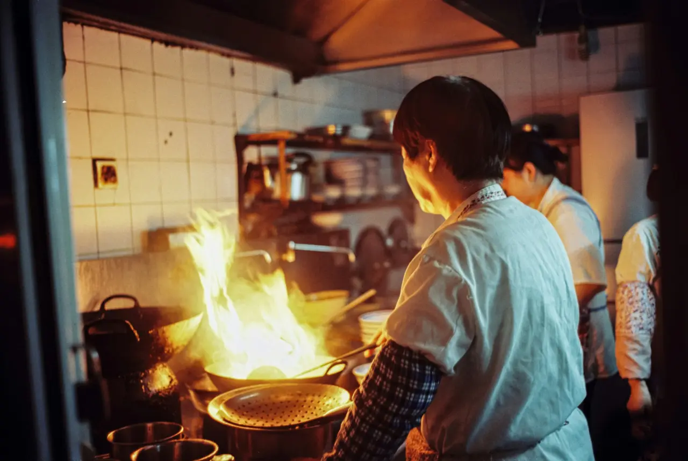
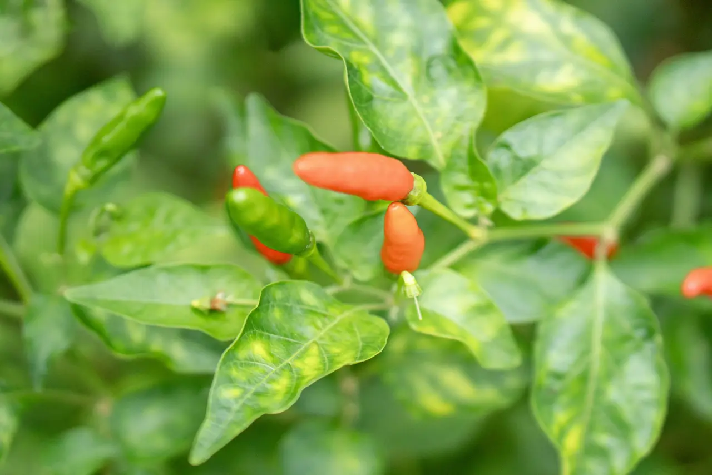
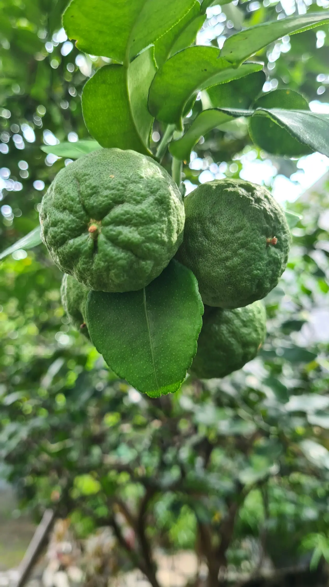
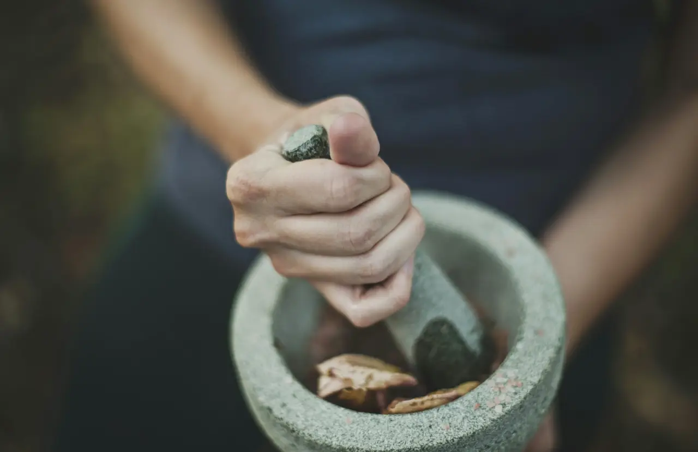
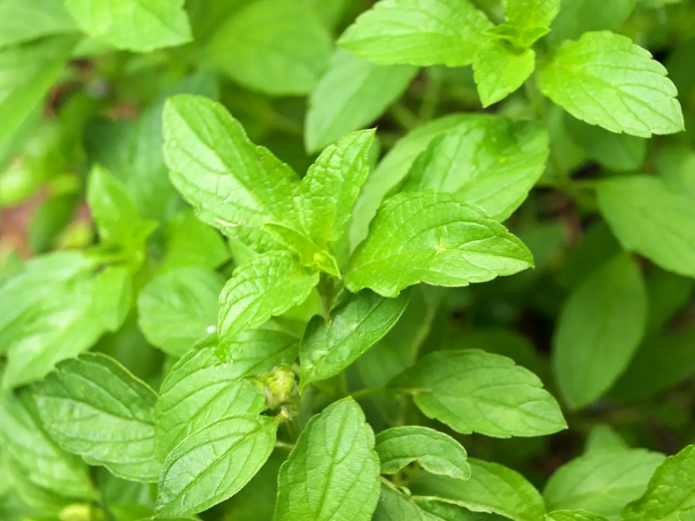
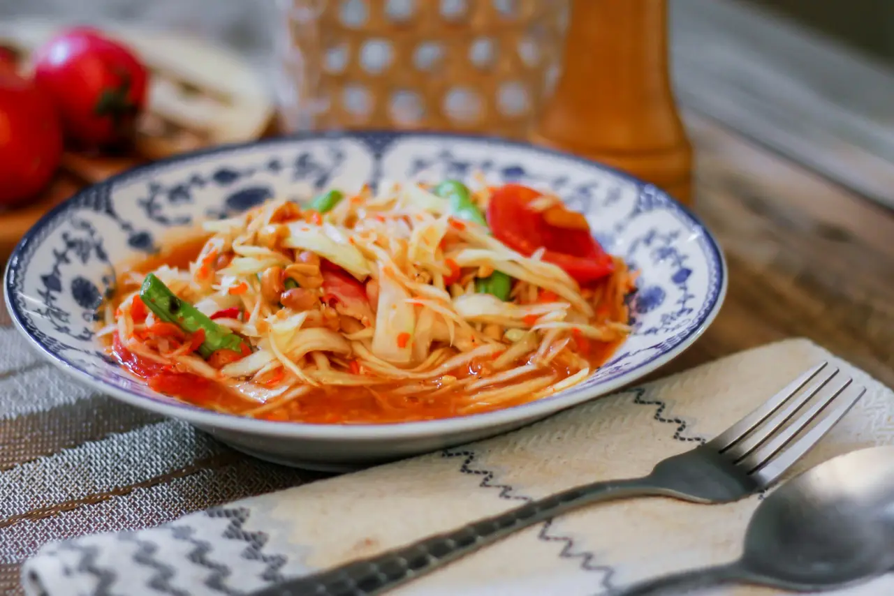

Thai fire kitchen · Jægersborggade 22, Nørrebro
Smoke, lime and a late table.
- At the counter
- Six seats
- Open
- Wed–Sun, 17:30
- Set menu
- 595 kr

The kitchen
Saep is the Isan word for food that hits every note at once. We cook it for six people a night, a metre from the wok.
One set menu that changes with the market, cooked over charcoal and a wok burner that runs hotter than it should. You sit at the counter and watch it happen. Nobody is in a hurry.
Balance · how a som tam is made
Five tastes, one mortar.
- เผ็ด Spicy Two bird's-eye chillies, bruised, never chopped.
- เปรี้ยว Sour Half a lime, squeezed straight into the mortar.
- เค็ม Salty Fish sauce, one long pour, then the pestle.
- หวาน Sweet Palm sugar, pounded until you can't find it.
- หอม Fragrant Torn herbs, last, so they stay loud.
No dish tastes of one thing.





Prototype ends here